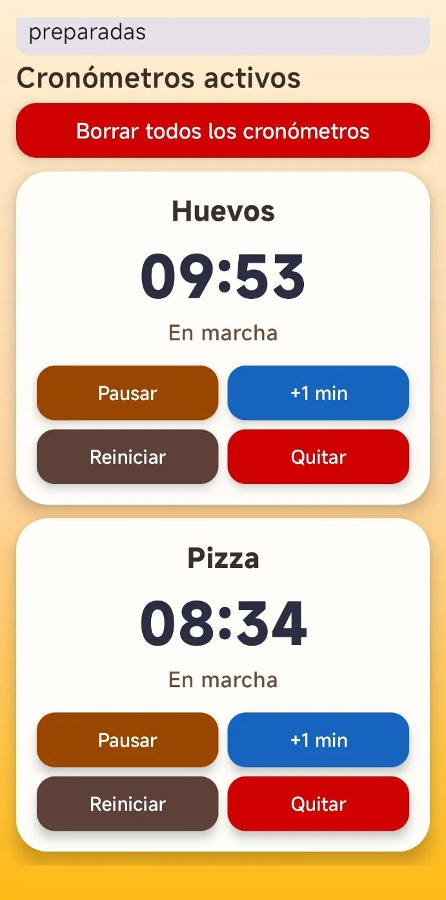

LECTURA Y DOCUMENTOSLee a tu manera.PDF, Word y mucho más.


Lector Fácil
Android Documentos
Lee PDF y Word, prepara exposiciones, utiliza marcadores y comparte documentos de forma sencilla.
Aplicaciones para Android y Windows hechas por afición, pensadas para facilitarte las cosas. Sin publicidad, sin pagos y sin donaciones.

NUESTRA COLECCIÓN
Explora las aplicaciones disponibles y conoce lo que hace cada una.
Android Documentos
Lee PDF y Word, prepara exposiciones, utiliza marcadores y comparte documentos de forma sencilla.

Android Cocina
Recetas paso a paso, cantidades ajustables, favoritos e indicaciones para cocinar con confianza.

Windows Recetario
Consulta y organiza 34 recetas ilustradas en tu PC, con una presentación sencilla y práctica.

Android Temporizadores
Varios cronómetros simultáneos, atajos personalizables y avisos con sonido y vibración.


Android Senderismo
Consulta rutas por España, graba tus caminatas con GPS y guarda el recorrido para volver a verlo.
Prueba otra palabra o muestra de nuevo toda la colección.
QUIÉN ESTÁ DETRÁS
Soy una persona aficionada a la informática y a crear aplicaciones útiles. La idea nació mientras desarrollaba herramientas para leer documentos, cocinar y resolver pequeñas necesidades del día a día.
Decidí reunirlas aquí para que otras personas también puedan utilizarlas. Voy aprendiendo, mejorando los programas y escuchando sugerencias de quienes los prueban, sin convertir esta afición en un negocio.
Conocer la política de privacidadSin anuncios, cuotas, ventas ni donaciones.
Enlaces a las versiones publicadas y contadores reales cuando están disponibles.
Las aplicaciones pueden actualizarse y ganar nuevas funciones.